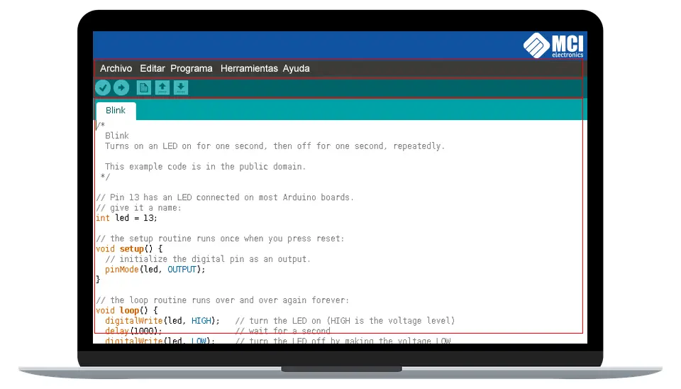

Familiarizate con el IDE de Arduino
Una vez instalado el IDE Arduino al iniciarlo no encontraremos con una ventana similar a esta.

Entorno de programación Arduino
El área de trabajo puede ser dividida en 5 grandes partes. De arriba abajo son: la barra de menús, la barra de botones, el editor de código, la barra de consola de mensajes, y la barra de estado.
La mayoría del tiempo estaremos trabajando en el editor de código, donde desarrollaremos nuestros proyectos.
A los elementos que mas les sacaremos provecho son:
Verificar: Este botón realiza dos funciones: comprueba que no hayan error en nuestro código, y si no hay problemas, lo compila.
Subir: Este botón lo utilizamos luego de “Verificar”. Su función es cargar en la memoria del microcontrolador el programa que hemos escrito.
Nuevo: Crea un nuevo sketch vacío.
Abrir: Despliega un menú con todos los sketches disponibles para abrir. Podemos abrir nuestros propios sketches como la gran cantidad de sketches que viene listos como ejemplos para probar, clasificados en categorías dentro del menú.
Guardar: Guarda el código de nuestro sketch en un fichero, el cual tendrá la extensión “.ino”. Podemos guardar estos ficheros donde queramos, pero el IDE Arduino nos ofrece una carpeta específica para ello, la carpeta “Arduino” en “Documentos”, ahí se creara una carpeta con el nombre de tu skecth, así el IDE evita que se mezclen los archivos de los distintos skecth.
Monitor Serial: Abre el monitor serial. Nos permite ver información transmitida desde nuestro Arduino por el puerto de comunicación serial, aquí hablamos un poco mas de el.
Menú contextual: Esta pestaña se ubica bajo el botón de monitor serial, nos permite abrir nuevas pestañas. Abrir nuevas pestañas es de suma utilidad cuando tenemos códigos tan largos que necesitamos dividirlo en partes para trabajar mas cómodamente. Es es así porque todas las nuevas pestañas abiertas forman parte del mismo proyecto que la primera pestaña original. Lo mas habitual es utilizar pestañas separadas para la definición de funciones, constantes o variables globales.